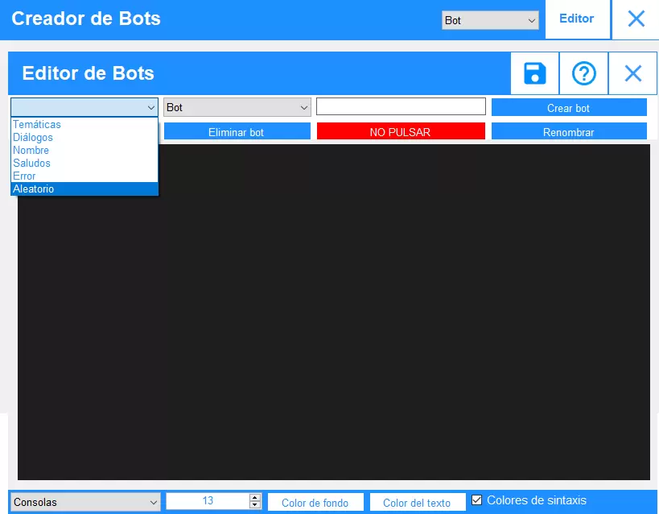
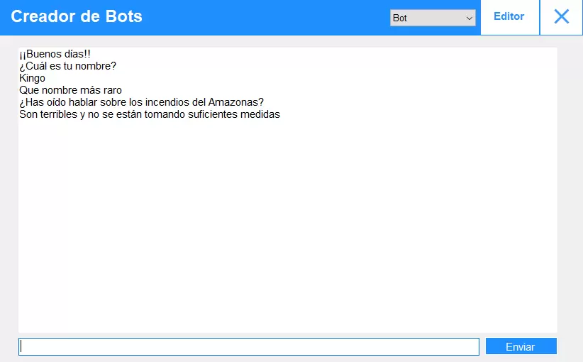

Los bots funcionan leyendo la información de 5 archivos con funciones distintas.
El punto y coma se usa para separar las preguntas de las respuestas. No debe usarse en los archivos: error y aleatorio. En el resto no deben usarse al final de cada línea.
Son palabras introducidas por el símbolo del dolar ($) usadas por el programa para usar en caso de que no haya una pregunta hecha por el usuario.
Esta constante se usa para definir como el bot preguntará el nombre del usuario. Es una constante necesaria en el archivo "Saludos". Puedes escribir diferentes respuestas para que el bot use una aleatoria y evitar que repita siempre lo mismo.
$preg_nombre¿Cómo te llamas? ¿Cuál es tu nombre? What's your name? Kimi no na wa
Define lo que responderá al usuario después de que le diga el nombre.
$res_nombreTienes nombre de ganster
Esta constante se usa para escribir el nombre del usuario, obviamente después de que se haya asignado, por lo tanto no puedes usarlo con
¿Crees que valgo para alcalde?Ya me lo imagino, $nombre alcalde, o incluso presidente
Según la hora del día el bot puede saludar con diferentes mensajes, para definirlos hay que usar las siguientes constantes:
$mañanaBuenos días!!
$tardeBuenas tardes!!
Cada bot genera dos archivos .txt y tres .csv, puedes editarlos usando cualquier editor, pero es recomendable usar el del programa.
En este archivo se almacenan las posibles preguntas para preguntar el nombre del usuario y lo que responde después. Son obligatorias para el correcto funcionamiento del bot y para eso necesita
$preg_nombreDime cuál es la pobre palabra que sirve para identificarte Anata no namae wa nanidesu ka?
$res_nombreEse nombre te azota con la energía de un rayo (Referencia a Pokémon Sol y Luna)
En este archivo se guardan preguntas concretas con sus posibles respuestas.
¿Cuál es tu anime favorito?Uffff, no sabría decidirme No se, estaría entre Ano Hi Mita Hana No Namae O Bokutachi Wa Mada Shiranai o Tate No Yuusha No Nariagari
Las preguntas y lo que pregunta el usuario se transforma a un formato sin interrogaciones, exclamaciones, tildes y se pone en minúsculas. Es el algoritmo que tiene el programa para quedarse con la idea esencial de la pregunta sin quitarle completamente el sentido. Por ejemplo la pregunta del ejemplo anterior sería:
cual es tu anime favoritoEste archivo contiene los mensajes que enviará el bot en caso de que el usuario diga algo para lo que no hay ninguna respuesta en otros archivos. Cada línea de este es un mensaje distinto y no hay que escribir puntos y comas.
No he entendido la referencia
Eso no tiene sentido para mi 😆😆😖😖😖😫
Aquí se almacenan los mensajes que se enviarán en caso de que el usuario no esté escribiendo nada. Este evento ocurre a los 30 segundos de la última interacción.
Dime algo que me aburro 🥺🥺🥺
En este archivo se contienen palabras clave con respuestas a ellas. Se puede usar para dar una opinión respecto a un tema ya que se comprobará que las palabras de "pregunta" estén. Por ejemplo:
incendios del amazonasSon terribles y no se están tomando suficientes medidas Se está perdiendo una gran cantidad de biodiversidad además de estar produciendo mucho CO2